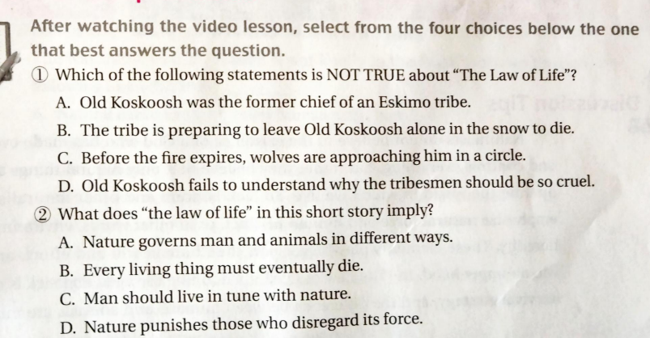

8.The law of life¶
课本页数: 227 作者: Jack London
往届考题¶
老人回想过往，想到了什么
He was once a great chief, having experienced many wonderful times with ample food, laughter everywhere, and people well-fed—the leftover food even rotted, and there were so many animals that they could run freely without being hunted, while the women raised many children. He also saw days without food, when people were starving, the fish no longer returned, and the animals were hard to catch. For seven years, the animals had not come, and the hunting dogs were skin and bones from hunger. Then he remembered, when he was still a child, seeing a pack of wolves kill a moose.
翻译在这里（https://www.docin.com/p-218686550.html）
角色：Old Koskoosh；his son；Sit-cum-to-ha (his granddaughter) ；Zing-ha (his friend)；the tribesmen
文章结构：Part I: the present, waiting for his death(227,228) Part II: his memory of the past days and meditations on the law of life(229)
Part III: his meditations on some examples (the past life experience)--- animals, the Great Famine, times of plenty, the moose (230,231)
Part IV: the present, the death is coming to him(232,233)
Nature --- kind, hostile, harsh, or neutral? (to human)
- Today nature seems to be a tamed beast, a pet of human.
- We shall not forget that human used to be the slaves of nature.
- Natural Disasters
- earthquake
- flooding
- drought
- famine
- tsunami
The writer gives us an extreme example: when living conditions become very harsh, young generation abandon old people, leaving them to death.
Chinese people give old people the most respect and care, filia/ people are praised by the society. This is our tradition.
Abandoning the old people -- the tradition of the local Indians.
How could that take place? Because of the environment and heredity, or some other things? Traditions are difficult to explain.
How did Koskoosh come to understand the meaning of the Law of Life?
- his death --- at the end of his life, he reflected on his whole life and the meaning of “the Law of Life”.
- the willow bud, the yellow leaf
- an individual, an episode, pass away --- the clouds in summer sky
- a maiden
- animals — mosquitoes, tree-squirrel, the rabbit, the big bald-face, the caribou, the missionary
- famine, times of plenty
- the moose, the wolves
part3:
He resumed his meditations: it was the same everywhere, with all things.
animals — mosquitoes, tree-squirrel, the rabbit, the big bald-face, the caribou, the missionary famine, times of plenty the moose, the wolves"
What is the use of the missionary here?
"He is a symbol of modern civilization --- to those local Indians, knowledge and religious teaching is useless, what they needed is food, the most important thing is to survive. Human civilization is nothing in the face of cruelty of nature.
an old moose who can not keep up with the herd
- Why did the old man remember the old moose?
- When he was a child, he could not understand the meaning of it. Now he could fully understand it, because he was like the moose. The law of life took place on him.
- How can we say the moose is like the old man in the story?
- The moose was not in the herd, and the old man would be abandoned by his tribesmen and his family.
We often watch TV programs like Animal World or Human and Nature, describing the struggle and killing between animals in Africa. Those predators and preys fight with each other for survival. How do you comment on it? (reasonable, just, cruel, savage?)
- If someday human as a species died away in some natural disasters, is nature too cruel or this is also “the Law of Life”?
- What kind of nature do you like better? An indifferent nature or a nature with mercy on human?
- Do you want nature to be lenient to us? Will you be lenient to nature?
Can We be Better?
- To some extent, human are determined by heredity and environment, but can we be better?
- Perhaps we can not change nature, but we can do something to change ourselves --- not so cold, so selfish to others.
- Even nature wants us to be kind to it.
课后要思考的问题：
This a story of naturalism, but is the writer completely neutral to this tradition? Do you think it has some ethical flavor?
原文¶
Old Koskoosh listened greedily. Though his sight had long since faded, his hearing was still acute, and the slightest sound penetrated to the glimmering intelligence which yet abode behind the withered forehead, but which no longer gazed forth upon the things of the world. Ah! that was Sit-cum-to-ha, shrilly anathematizing the dogs as she cuffed and beat them into the harnesses. Sit-cum-to-ha was his daughter's daughter, but she was too busy to waste a thought upon her broken grandfather, sitting alone there in the snow, forlorn and helpless. Camp must be broken. The long trail waited while the short day refused to linger. Life called her, and the duties of life, not death. And he was very close to death now.
一位老印第安人正坐在雪地上，他叫考什克库什，部落的前首领.现在他所能做的就是坐着听其他人的，眼睛已经老得看不见了，可是他的耳朵却很灵敏，什么声音都能听到。
啊哈！这是他女儿西特克姆的声音，她正在赶狗，试图让它们都站到血前面去。她已经忘记了他，别人也忘记了他。他们得去寻找新的打猎场所，长途的跋涉就要开始了。北部地区的白昼在变短，部落的人不能等死，而考什克库什正在渐渐地死去。
The thought made the old man panicky for the moment, and he stretched forth a palsied hand which wandered tremblingly over the small heap of dry wood beside him. Reassured that it was indeed there, his hand returned to the shelter of his mangy furs, and he again fell to listening. The sulky crackling of half-frozen hides told him that the chief's moose-skin lodge had been struck, and even then was being rammed and jammed into portable compass. The chief was his son, stalwart and strong, head man of the tribesmen, and a mighty hunter. As the women toiled with the camp luggage, his voice rose, chiding them for their slowness. Old Koskoosh strained his ears. It was the last time he would hear that voice. There went Geehow's lodge! And Tusken's! Seven, eight, nine; only the shaman's could be still standing. There! They were at work upon it now. He could hear the shaman grunt as he piled it on the sled. A child whimpered, and a woman soothed it with soft, crooning gutturals. Little Koo-tee, the old man thought, a fretful child, and not overstrong. It would die soon, perhaps, and they would burn a hole through the frozen tundra and pile rocks above to keep the wolverines away. Well, what did it matter? A few years at best, and as many an empty belly as a full one. And in the end, Death waited, ever-hungry and hungriest of them all.
冻僵的动物毛皮发出的僵硬的辟啪声告诉他，首领的帐篷正在被拆掉。首领，他的儿子，是一位强有力的猎手。考什克库什被留下来慢慢地死去。女人们正在干活，老考什克库什听到他儿子让那些女人快点干活的说话声。他努力地听着，这是他最后一次可以听到这声音了。一个小孩哭了起来，一个女人轻声唱起了歌，来让孩子安静下来。孩子叫库梯，老人心里想——那是个多病的孩子——他很快就会死去的，人们会在冻土上烧出一个小洞，把他埋在里面，还会用石头盖住他那幼小的身体，以免被狼吃掉了。那又怎么样呢？小孩活了几年，到头来不也得死吗？
What was that? Oh, the men lashing the sleds and drawing tight the thongs. He listened, who would listen no more. The whip-lashes snarled and bit among the dogs. Hear them whine! How they hated the work and the trail! They were off! Sled after sled churned slowly away into the silence. They were gone. They had passed out of his life, and he faced the last bitter hour alone. No. The snow crunched beneath a moccasin; a man stood beside him; upon his head a hand rested gently. His son was good to do this thing. He remembered other old men whose sons had not waited after the tribe. But his son had. He wandered away into the past, till the young man's voice brought him back.
考什克库什听着其它的声音：男人们把坚韧的皮绳子绑在雪上，捆住了自己的东西，他们响亮地抽着皮鞭子，命令狗们拖动着雪橇跑起来。听那些狗的嚎叫声！它们是多么厌恶这工作！人们出发了，雪一辆接着一辆慢慢地滑走了，他们已经从他的生活中消失了，他只能独自面对这最后的时光。但是那是什么呢？
有一个人的鞋把雪给压实了，他就站在考什克库什的旁边，温柔地把手放在他苍老的头上。他的儿子是会做这种事的。他想起了那些被自己的儿子丢下，连声再见都没说的老人们。他追忆起了往事，直到儿子的声音唤醒了他。
"Is it well with you?" he asked.
And the old man answered, "It is well."
"There be wood beside you," the younger man continued, "and the fire burns bright. The morning is gray, and the cold has broken. It will snow presently. Even now is it snowing."
"Ay, even now is it snowing."
"The tribesmen hurry. Their bales are heavy, and their bellies flat with lack of feasting. The trail is long and they travel fast. I go now. It is well?"
"It is well. I am as a last year's leaf, clinging lightly to the stem. The first breath that blows, and I fall. My voice is become like an old woman's. My eyes no longer show me the way of my feet, and my feet are heavy, and I am tired. It is well."
“和你待一会儿，好吗？”儿子问。“很好。”老人答道。
“你旁边有木头，把火烧得旺点，”儿子说，“早上天有点阴，很冷，就要下雪了。现在已经下起来了。”
“是啊，现在已经下起雪了。”
“部落的人都等急了，他们拉的东西很多，没吃什么东西，肚子饿扁了，要走很长的路，他们要快点赶路。”
“是啊。”
“我现在就得走了，一切都好吧？”
“很好。我已经是风烛残年了，一阵风就能把我打倒在地上。我的，我的声音弱地象个老女人一样，眼睛再也看不清脚下的路了。我只是有点累，其它一切都很好。”
He bowed his head in content till the last noise of the complaining snow had died away, and he knew his son was beyond recall. Then his hand crept out in haste to the wood. It alone stood between him and the eternity that yawned in upon him. At last the measure of his life was a handful of fagots. One by one they would go to feed the fire, and just so, step by step, death would creep upon him. When the last stick had surrendered up its heat, the frost would begin to gather strength. First his feet would yield, then his hands; and the numbness would travel, slowly, from the extremities to the body. His head would fall forward upon his knees, and he would rest. It was easy. All men must die.
当儿子骑马走了的时候，他垂下头听着雪花飘落的声音。他又摸到了身边的木柴，木柴会一根根烧光的，而死亡会一步步靠近他，最后一根木柴烧光的时候，寒冷就会来临，那时他的脚会先被冻僵，然后是手。寒冷会慢慢地从外侵入体内，那时他就会安息了。这很平常——老人早晚都得死。
He did not complain. It was the way of life, and it was just. He had been born close to the earth, close to the earth had he lived, and the law thereof was not new to him. It was the law of all flesh. Nature was not kindly to the flesh. She had no concern for that concrete thing called the individual. Her interest lay in the species, the race. This was the deepest abstraction old Koskoosh's barbaric mind was capable of, but he grasped it firmly. He saw it exemplified in all life. The rise of the sap, the bursting greenness of the willow bud, the fall of the yellow leaf--in this alone was told the whole history. But one task did Nature set the individual. Did he not perform it, he died. Did he perform it, it was all the same, he died. Nature did not care; there were plenty who were obedient, and it was only the obedience in this matter, not the obedient, which lived and lived always. The tribe of Koskoosh was very old. The old men he had known when a boy, had known old men before them. Therefore it was true that the tribe lived, that it stood for the obedience of all its members, way down into the forgotten past, whose very resting-places were unremembered. They did not count; they were episodes. They had passed away like clouds from a summer sky. He also was an episode, and would pass away. Nature did not care. To life she set one task, gave one law. To perpetuate was the task of life, its law was death. A maiden was a good creature to look upon, full-breasted and strong, with spring to her step and light in her eyes. But her task was yet before her. The light in her eyes brightened, her step quickened, she was now bold with the young men, now timid, and she gave them of her own unrest. And ever she grew fairer and yet fairer to look upon, till some hunter, able no longer to withhold himself, took her to his lodge to cook and toil for him and to become the mother of his children. And with the coming of her offspring her looks left her. Her limbs dragged and shuffled, her eyes dimmed and bleared, and only the little children found joy against the withered cheek of the old squaw by the fire. Her task was done. But a little while, on the first pinch of famine or the first long trail, and she would be left, even as he had been left, in the snow, with a little pile of wood. Such was the law.
他感到难过，但他并不去想这些伤心事。这就是生活。他活得离大地太近了，这条法则并不仅适用于他，这是人类的生命法则。大自然对人并不留情，她并不会为个人着想，她关心的只是集体—人类这一种族。
对于老考什克库什来说，这是个深刻的问题，但是有些知识的他知道这个道理。他这一生中见过许多例证，早春的时候，树木会腐烂掉，新生的绿叶象人的皮肤一样柔软光鲜，枯干的黄叶落下，这就全成了历史了。
He placed a stick carefully upon the fire and resumed his meditations. It was the same everywhere, with all things. The mosquitoes vanished with the first frost. The little tree-squirrel crawled away to die. When age settled upon the rabbit it became slow and heavy, and could no longer outfoot its enemies. Even the big bald-face grew clumsy and blind and quarrelsome, in the end to be dragged down by a handful of yelping huskies. He remembered how he had abandoned his own father on an upper reach of the Klondike one winter, the winter before the missionary came with his talk-books and his box of medicines. Many a time had Koskoosh smacked his lips over the recollection of that box, though now his mouth refused to moisten. The "painkiller" had been especially good. But the missionary was a bother after all, for he brought no meat into the camp, and he ate heartily, and the hunters grumbled. But he chilled his lungs on the divide by the Mayo, and the dogs afterwards nosed the stones away and fought over his bones.
他往火堆里又放了一根柴火，开始回忆起自己的过去。他也曾经是位伟大的首领，他度过了许多美好的时光，食物充足，到处欢声笑语，人们酒足饭饱———剩下的食物都烂掉了，动物多得可以不杀，自由奔跑，女人们养了很多孩子。
Koskoosh placed another stick on the fire and harked back deeper into the past. There was the time of the Great Famine, when the old men crouched empty-bellied to the fire, and let fall from their lips dim traditions of the ancient day when the Yukon ran wide open for three winters, and then lay frozen for three summers. He had lost his mother in that famine. In the summer the salmon run had failed, and the tribe looked forward to the winter and the coming of the caribou. Then the winter came, but with it there were no caribou. Never had the like been known, not even in the lives of the old men. But the caribou did not come, and it was the seventh year, and the rabbits had not replenished, and the dogs were naught but bundles of bones. And through the long darkness the children wailed and died, and the women, and the old men; and not one in ten of the tribe lived to meet the sun when it came back in the spring. That was a famine!
他也看到了没有食物的日子，人们饥肠辘辘，鱼群不再回来，动物难以捕捉。动物已 经有七年没有来了，猎狗们饿得皮包着骨头。
But he had seen times of plenty, too, when the meat spoiled on their hands, and the dogs were fat and worthless with overeating--times when they let the game go unkilled, and the women were fertile, and the lodges were cluttered with sprawling men-children and women-children. Then it was the men became high-stomached, and revived ancient quarrels, and crossed the divides to the south to kill the Pellys, and to the west that they might sit by the dead fires of the Tananas. He remembered, when a boy, during a time of plenty, when he saw a moose pulled down by the wolves. Zing-ha lay with him in the snow and watched--Zing-ha, who later became the craftiest of hunters, and who, in the end, fell through an air-hole on the Yukon. They found him, a month afterward, just as he had crawled halfway out and frozen stiff to the ice.
But the moose. Zing-ha and he had gone out that day to play at hunting after the manner of their fathers. On the bed of the creek they struck the fresh track of a moose, and with it the tracks of many wolves. "An old one," Zing-ha, who was quicker at reading the sign, said--"an old one who cannot keep up with the herd. The wolves have cut him out from his brothers, and they will never leave him." And it was so. It was their way. By day and by night, never resting, snarling on his heels, snapping at his nose, they would stay by him to the end. How Zing-ha and he felt the blood-lust quicken! The finish would be a sight to see!
接着，他想起了，当自己还是个孩子的时候，看到过狼群咬死了一只驼鹿。他和朋友， 金哈，在一起。后来，他在育肯河边被杀死了。那天，他和金哈出去玩，在河下游，他们 看到了一只又大又重的驼鹿的脚印。
“这是一只老驼鹿，”金哈说，“它不能象其它的驼鹿那样跑得那么快了，它掉队了。 狼群把它和其它的驼鹿分开了，狼群不会放过它的。”
果然，狼群不分昼夜地咬它的鼻子，咬它的脚，一直跟着它到最后。金哈和他感到体 内的血流加速了起来，结局值得一看。
他们一路追踪狼群和驼鹿的踪迹，每一个脚印都讲述着不同的故事。他们可以目睹到 这场悲剧的发生，这是驼鹿停下来搏斗的地方，雪地上压下了许多脚印，一匹狼被驼鹿沉 重的脚给踢死了。往前他们又看到驼鹿是如何挣扎着逃上了一座小山，但是狼群从背后袭 击了它。很明显结局就在附近，前面的雪地都被染红了。接着，他们听到了打斗的声音， 不只是狼的长啸声，还有它们锋利的牙齿咬在鹿肉上发出的杂乱的声音。
他和金哈趴在地上靠近了些，这样狼群就不会发觉他们了。他们目睹了结局，而这画 面是如此震撼人心，他一辈子都不会忘记。他的那双模糊不清的瞎眼又看到了遥远过去发 生的那一幕。
Eager-footed, they took the trail, and even he, Koskoosh, slow of sight and an unversed tracker, could have followed it blind, it was so wide. Hot were they on the heels of the chase, reading the grim tragedy, fresh-written, at every step. Now they came to where the moose had made a stand. Thrice the length of a grown man's body, in every direction, had the snow been stamped about and uptossed. In the midst were the deep impressions of the splay-hoofed game, and all about, everywhere, were the lighter footmarks of the wolves. Some, while their brothers harried the kill, had lain to one side and rested. The full-stretched impress of their bodies in the snow was as perfect as though made the moment before. One wolf had been caught in a wild lunge of the maddened victim and trampled to death. A few bones, well picked, bore witness.
他的脑海里长久地回忆着过去。火要灭了，寒冷侵袭进了他的身体，他又添上了两块 木柴—只剩下两块了。这就是他最后的时光了。他感到非常孤独，又在火上放上了一块木 柴。
Again, they ceased the uplift of their snowshoes at a second stand. Here the great animal had fought desperately. Twice had he been dragged down, as the snow attested, and twice had he shaken his assailants clear and gained footing once more. He had done his task long since, but none the less was life dear to him. Zing-ha said it was a strange thing, a moose once down to get free again; but this one certainly had. The shaman would see signs and wonders in this when they told him.
听！木柴在火上发出了多么奇怪的声音！不，那不是木柴，当他听出了那声音的时候， 身体不由得一颤。狼群！狼的嚎叫声又使他想起了那只老驼鹿临死前的画面。他看到驼鹿 的身体被撕成了碎片，鲜血在雪地上流成了河。他看到了被狼舔得干干净净的骨头，就堆 在被冻住的血块旁。他看到了灰色狼群奔跑的身影，眼睛闪亮，伸着长长的湿淋淋的舌头 和锋利的牙齿。他看到它们围成了一圈，靠得越来越近了。
And yet again, they come to where the moose had made to mount the bank and gain the timber. But his foes had laid on from behind, till he reared and fell back upon them, crushing two deep into the snow. It was plain the kill was at hand, for their brothers had left them untouched. Two more stands were hurried past, brief in time-length and very close together. The trail was red now, and the clean stride of the great beast had grown short and slovenly. Then they heard the first sounds of the battle--not the full-throated chorus of the chase, but the short, snappy bark which spoke of close quarters and teeth to flesh. Crawling up the wind, Zing-ha bellied it through the snow, and with him crept he, Koskoosh, who was to be chief of the tribesmen in the years to come. Together they shoved aside the under branches of a young spruce and peered forth. It was the end they saw.
The picture, like all of youth's impressions, was still strong with him, and his dim eyes watched the end played out as vividly as in that far-off time. Koskoosh marvelled at this, for in the days which followed, when he was a leader of men and a head of councillors, he had done great deeds and made his name a curse in the mouths of the Pellys, to say naught of the strange white man he had killed, knife to knife, in open fight.
For long he pondered on the days of his youth, till the fire died down and the frost bit deeper. He replenished it with two sticks this time, and gauged his grip on life by what remained. If Sit-cum-to-ha had only remembered her grandfather, and gathered a larger armful, his hours would have been longer. It would have been easy. But she was ever a careless child, and honored not her ancestors from the time the Beaver, son of the son of Zing-ha, first cast eyes upon her. Well, what mattered it? Had he not done likewise in his own quick youth? For a while he listened to the silence. Perhaps the heart of his son might soften, and he would come back with the dogs to take his old father on with the tribe to where the caribou ran thick and the fat hung heavy upon them.
He strained his ears, his restless brain for the moment stilled. Not a stir, nothing. He alone took breath in the midst of the great silence. It was very lonely. Hark! What was that? A chill passed over his body. The familiar, long-drawn howl broke the void, and it was close at hand. Then on his darkened eyes was projected the vision of the moose--the old bull moose--the torn flanks and bloody sides, the riddled mane, and the great branching horns, down low and tossing to the last. He saw the flashing forms of gray, the gleaming eyes, the lolling tongues, the slavered fangs. And he saw the inexorable circle close in till it became a dark point in the midst of the stamped snow.
A cold muzzle thrust against his cheek, and at its touch his soul leaped back to the present. His hand shot into the fire and dragged out a burning faggot. Overcome for the nonce by his hereditary fear of man, the brute retreated, raising a prolonged call to his brothers; and greedily they answered, till a ring of crouching, jaw-slobbered gray was stretched round about. The old man listened to the drawing in of this circle. He waved his brand wildly, and sniffs turned to snarls; but the panting brutes refused to scatter. Now one wormed his chest forward, dragging his haunches after, now a second, now a third; but never a one drew back. Why should he cling to life? he asked, and dropped the blazing stick into the snow. It sizzled and went out. The circle grunted uneasily, but held its own. Again he saw the last stand of the old bull moose, and Koskoosh dropped his head wearily upon his knees. What did it matter after all? Was it not the law of life?
一只冰凉的湿鼻子碰到了他的脸，这一碰，他精神一振，一下就醒了过来。他伸手从灰堆里抓起了一根燃烧着的木棍。狼看到了火，但是并没有害怕。它转过身，仰天对着它的同伴嚎叫了起来。它们饥饿地回应着跑了过来。老印第安人听着饿狼的脚步声，他听到它们在他和小火堆的周围形成了一个包围圈，他冲着它们挥舞着燃烧的木棍，但它们并没有离开。
这时，其中的一匹狼慢慢地靠近了，好象要试试老人的力气。其它的也跟了过来。包围圈越来越小，狼全上来了。他为什么要搏斗呢？为什么要苟延残喘呢？他把木柴有火的一头放下了，插进了厚厚的雪地里。火完全熄灭了。
狼群的包围圈靠得更近了，老印第安人又一次看到了那只驼鹿在临死前拼命挣扎的一幕。他把头埋在了膝盖里。
反抗究竟有什么意义呢？这不是生命的法则吗？
删减版本及翻译¶
https://www.douban.com/group/topic/76111201
The Law of Life 生命的法则
原文（英语）/Jack London杰克•伦敦
译文（汉语）/朱明川
The old Indian was sitting on the snow. It was Koskoosh, former chief of his tribe. Now, all he could do was sit and listen to the others. His eyes were old. He could not see, but his ears were wide open to every sound. 这个印第安老人坐在积雪上。他是K，他们部落的前任酋长。现在他只能坐着,静静地听别人。他的眼睛失明了，他看不见，但是他的耳朵是灵敏的，可以听见所有的声音。
“Aha.” That was the sound of his daughter, Sit-cum-to-ha. She was beating the dogs, trying to make them stand in front of the snow sleds. He was forgotten by her, and by the others, too. They had to look for new hunting grounds. The long, snowy ride waited. The days of the northlands were growing short. The tribe could not wait for death. Koskoosh was dying.
“啊哈”这是她女儿的声音。她抽打那些狗，试着使它们在雪橇前站起来。他被她忽略了，也被别人忽略。他们要寻找新的打猎场。雪橇等待了很长时间。北方的白天变得更短了。K快要死了，但是我们的部落不能等死。
The stiff, crackling noises of frozen animal skins told him that the chief’s tent was being torn down. The chief was a mighty hunter. He was his son, the son of Koskoosh. Koskoosh was being left to die. 冰冻的动物皮的撕裂声告诉他，酋长的帐篷在被拆除。酋长是一个非凡的猎人，他是K的儿子。K将要留下来死去。
As the women worked, old Koskoosh could hear his son’s voice drive them to work faster. He listened harder. It was the last time he would hear that voice. A child cried, and a woman sang softly to quiet it. The child was Koo-tee, the old man thought, a sickly child. It would die soon, and they would burn a hole in the frozen ground to bury it. They would cover its small body with stones to keep the wolves away. 当这些妇女工作时，年老的K可以听见他的儿子的声音在催促她们快速工作。他听起来是严格的，这是他最后一次听见这样的声音。一个孩子在哭闹，一个妇人轻柔的歌声使他安静下来。老人认为这个孩子是koo，一个生病的孩子。不久他就死了，他们在冰冻大地上挖了一个洞来埋葬他。他们用石头覆盖了他廋小的身体，阻隔狼的到来。
“Well, what of it? A few years, and in the end, death. Death waited ever hungry. Death had the hungriest stomach of all.” “什么？，一些年，最后死亡。死亡永远在饥饿的等待。死亡有所有最饥饿的胃。”
Koskoosh listened to other sounds he would hear no more: the men tying strong leather rope around the sleds to hold their belongings; the sharp sounds of leather whips, ordering the dogs to move and pull the sleds. K没有听到其他更多的声音：人们围绕着雪橇系结实的皮革绳以装下他们的行李。尖锐的皮鞭抽打声，命令狗们拉动雪橇。
“Listen to the dogs cry. How they hated the work.“听这些狗的叫声，它们多么憎恨这工作。”
They were off. Sled after sled moved slowly away into the silence. They had passed out of his life. He must meet his last hour alone. 他们离开了，雪橇一个跟一个的缓慢地在沉默中移动。他们离开他，在最后的时间里，他必须独自面对。
“But what was that?” The snow packed down hard under someone’s shoes. A man stood beside him, and placed a hand gently on his old head. His son was good to do this. He remembered other old men whose sons had not done this, who had left without a goodbye. “什么声音？”雪在一个人脚下被压实。一个男人站在他旁边，绅士的伸出手放在他头上。他的儿子是乐于做这些的。他记得其他老人的儿子没有这样做，他们离开了没有告别。
His mind traveled into the past until his son’s voice brought him back. “It is well with you?” his son asked. And the old man answered, “It is well.”
他在回忆过去，直到他儿子的声音使他恢复。“这对你好吗？”他儿子问。老人回答“这样很好”。
“There is wood next to you and the fire burns bright,” the son said. “The morning is gray and the cold is here. It will snow soon. Even now it is snowing. Ahh, even now it is snowing. “这些木材给你以后点火照明，”儿子说：“这个早晨是阴沉而寒冷的。不久将会下雪，甚至现在雪就在下。
“The tribesmen hurry. Their loads are heavy and their stomachs flat from little food. The way is long and they travel fast. I go now. All is well?” “部落的人匆忙的，他们的担子很重，他们的胃里只有一点食物。路很远，他们走的很快。我现在走，好不好？”
“It is well. I am as last year’s leaf that sticks to the tree. The first breath that blows will knock me to the ground. My voice is like an old woman’s. My eyes no longer show me the way my feet go. I am tired and all is well.” “这很好。我就像去年树上的叶子一样，风在一瞬间就会把我吹落在地上。我的嗓音像个老妇人的。我的眼睛不能看清脚下的路。我累了，一切都很好。”
He lowered his head to his chest and listened to the snow as his son rode away. He felt the sticks of wood next to him again. One by one, the fire would eat them. And step by step, death would cover him. When the last stick was gone, the cold would come. First, his feet would freeze. Then, his hands. The cold would travel slowly from the outside to the inside of him, and he would rest. It was easy…all men must die. 他低下头在胸前，听他儿子踏雪的声音渐远。他离那些树枝更近一点。一点点，火燃烧了它们；一步步，死亡会靠近他。当最后一点树枝燃尽的时候，寒冷会到来。首先，他的脚会被冻僵，然后是他的头。寒冷慢慢的从外部侵入内部，他将会长眠。这是容易的…人必定会死。
He felt sorrow, but he did not think of his sorrow. It was the way of life. He had lived close to the earth, and the law was not new to him. It was the law of the body. Nature was not kind to the body. She was not thoughtful of the person alone. She was interested only in the group, the race, the species. 他感到悲伤，但他却没有思考他的悲伤。他生活在地球上，这个规律对他不是新鲜的。这是身体的规律，大自然对身体不是友好的。她不体贴人的孤独。她关心的只是种群、进化和物种。
This was a deep thought for old Koskoosh. He had seen examples of it in all his life. The tree sap in early spring; the new-born green leaf, soft and fresh as skin; the fall of the yellowed, dry leaf. In this alone was all history. 这对K来说是深奥的思想。他一生中看到很多例子。早春，树的生根；长出新的绿叶，柔软新鲜的像皮肤；秋天枯黄的落叶。这就是全部的历史。
He placed another stick on the fire and began to remember his past. He had been a great chief, too. He had seen days of much food and laughter; fat stomachs when food was left to rot and spoil; times when they left animals alone, unkilled; days when women had many children. And he had seen days of no food and empty stomachs, days when the fish did not come, and the animals were hard to find.
他把另一些树枝放入火中，开始回忆他的过去。他也是一个非凡的酋长。他看到过一个充满食物和笑声的时期；吃饱后仍会剩下很多食物坏掉;他们留下动物不杀畜养起来的时代；人们有许多孩子的时代。同时他也看到过一个没有食物，饿肚子的时代，没有鱼到来，动物也很难找到的日子。
For seven years the animals did not come. Then, he remembered when as a small boy how he watched the wolves kill a moose. He was with his friend Zing-ha, who was killed later in the Yukon River. 他七岁那年，没有动物到来。而且他记得他小时候如何看到狼群杀死一头鹿。他和他的朋友Z一起，Z后来在纽约河中被杀了。
Ah, but the moose. Zing-ha and he had gone out to play that day. Down by the river they saw fresh steps of a big, heavy moose. “He’s an old one,” Zing-ha had said. “He cannot run like the others. He has fallen behind. The wolves have separated him from the others. They will never leave him.” 关于这头鹿。那天Z和他去外面玩。他们在河的下游看到一头鹿刚刚留下的脚印。“它已经老了，”Z说：“它不能像其它鹿那样跑。它落在了后面。狼群把它和其它的分开，否则，它们不会留下它的。”
And so it was. By day and night, never stopping, biting at his nose, biting at his feet, the wolves stayed with him until the end. 就这样，日夜不停，咬伤它的鼻子，咬伤它的脚，狼群尾随它直到最后。
Zing-ha and he had felt the blood quicken in their bodies. The end would be a sight to see. Z和他感到血液在身体中快速流动。他们看到的这最后一幕。
They had followed the steps of the moose and the wolves. Each step told a different story. They could see the tragedy as it happened: here was the place the moose stopped to fight. The snow was packed down for many feet. One wolf had been caught by the heavy feet of the moose and kicked to death. Further on, they saw how the moose had struggled to escape up a hill. But the wolves had attacked from behind. The moose had fallen down and crushed two wolves. Yet, it was clear the end was near. 他们跟着鹿和狼群的脚印。每一步告诉他们一个不同的故事。他们看到了悲剧的发生：这是鹿停止抵抗的地方。雪被许多脚踏实。一头狼被鹿脚重重击中致死。然后，他们看到鹿挣扎着逃上了一个小山。但狼群迂回进攻。鹿被两头狼包抄、咬死。是的，这是清楚的，这个结尾很近。
The snow was red ahead of them. Then they heard the sounds of battle. He and Zing-ha moved closer, on their stomachs, so the wolves would not see them. They saw the end. The picture was so strong it had stayed with him all his life. His dull, blind eyes saw the end again as they had in the far off past. 他们前方的雪被染红了。不久他们听到打斗的声音。他和Z靠近它们，狼是饥饿的，所以没有发现他们。他们看到最后。这幅图画对他一生的经历来说是如此壮观。他呆滞的失明的眼睛又一次看见这很久以前的一幕。
For long, his mind saw his past. The fire began to die out, and the cold entered his body. He placed two more sticks on it, just two more left. This would be how long he would live. 他脑中长时间的闪现着过去。火渐渐的熄灭了，寒冷入侵他的身体。他给火添了两三根树枝，只剩下了两三根。这决定了他还能活多久。
It was very lonely. He placed one of the last pieces of wood on the fire. Listen, what a strange noise for wood to make in the fire. No, it wasn’t wood. His body shook as he recognized the sound…wolves. 现在是孤独的。他把最后一些木头放入火中。听，木头在火中发出奇妙的响声。这不是木头的声音。他的身体在抖动，他认识这个声音——是狼群。
The cry of a wolf brought the picture of the old moose back to him again. He saw the body torn to pieces, with fresh blood running on the snow. He saw the clean bones lying gray against the frozen blood. He saw the rushing forms of the gray wolves, their shinning eyes, their long wet tongues and sharp teeth. And he saw them form a circle and move ever slowly closer and closer. 狼群的叫声把老鹿的图片再次带回来。他看到身体被撕成碎片，鲜血在雪地上漫流。他看到干净的骨头躺在冰冻的血上。他眼前涌现出灰暗的狼群的形象，灵活的眼睛，长长的湿润的石头和锋利的牙齿。他看着它们形成的包围圈慢慢地移动，越来越近。
A cold, wet nose touched his face. At the touch, his soul jumped forward to awaken him. His hand went to the fire and he pulled a burning stick from it. The wolf saw the fire, but was not afraid. It turned and howled into the air to his brother wolves. They answered with hunger in their throats, and came running. 一个冰凉的湿润的鼻子在触碰他的脸。在触碰中，他的灵魂被吓了一跳，惊醒了他。他的手伸向火，从中抽出了一些燃烧的树枝。狼看见火，并不害怕。狼群对着天空仰头长啸。它们的喉咙声伴随着饥饿回答他，快速的跑着。
The old Indian listened to the hungry wolves. He heard them form a circle around him and his small fire. He waved his burning stick at them, but they did not move away. Now, one of them moved closer, slowly, as if to test the old man’s strength. Another and another followed. The circle grew smaller and smaller. Not one wolf stayed behind. 印第安老人听着这些饥饿的狼。他听见它们形成的圈子围绕着他和他渐熄的火旋转。他对着它们挥舞带火的树枝，但是它们一点也没有移动。现在，它们中的一个慢慢的靠近，好像在试探他的力气。其它狼一个跟着一个。包围圈越来越小。没有一个狼落后。
Why should he fight? Why cling to life? And he dropped his stick with the fire on the end of it. It fell in the snow and the light went out. 他为什么而战？为什么留恋生命？他仍下了燃烧的只剩下很短一段的树枝。它跌落在雪中，光渐渐消失。
The circle of wolves moved closer. Once again the old Indian saw the picture of the moose as it struggled before the end came. He dropped his head to his knees. What did it matter after all? Isn’t this the law of life? 狼的包围圈更小了。印第安老人又一次看见这幅图画，鹿在死亡到来之前的挣扎。他低下头到膝盖处。这后面的内容是什么？这不就是生命的法则吗？
课本上的其他内容¶


Discussion Tips
Naturalists do not believe in the existence of a God who has made everything and controls everything, but rather they believe that only natural things and laws operate the world in which we live. So Jack London and other naturalists often emphasize natural force and human instinct, or in other words, environment and heredity. These elements play bigger part than human will and effort, and often win an upper hand. In"The Law of Life," abandoning the aged and sick is almost a survival strategy, and the difference between humans and animals are minimized as both needing to obey the law of nature, or "the law of life."No matter how violent or uncaring the nature is, man needs to ultimately accepts its superiority over an individual. If we read "To Build a Fire", which you can find in "Additional Story for Reading and Discussion" in this Unit, we will find that both protagonists finally succumb to(屈服于)death, or to the natural law. Finally, both old Koskoosh and the nameless man on the Yukon trail accept their fates peacefully with some sort of understanding. In these stories, Jack London presents the basic ideas of Darwinism and the survival of the fittest, as he understood them.


yf的资料¶
The law of Life
"The Law of Life" is a short story by Jack London, which explores the naturalistic theme of survival and the inevitability of death. Set in a harsh Arctic environment, the story focuses on an elderly Native American man, Old Koskoosh, who faces the ultimate challenge of nature's law.
The main themes in "The Law of Life" include:
- Naturalism: The story is a strong example of naturalism, a literary movement that emphasizes the influence of environment, heredity, and social conditions on human characters. London portrays nature as indifferent and unforgiving, with its own set of immutable laws that all living creatures must follow.
- Survival of the Fittest: The harsh Arctic setting and the struggles of the characters exemplify the Darwinian concept of "survival of the fittest." The tribe must keep moving to survive, leaving behind those who cannot keep up, including Old Koskoosh.
- Acceptance of Death: Old Koskoosh's resignation to his fate reflects the naturalistic perspective of accepting death as an inevitable part of life. His reflections on his past life and the customs of his people show an understanding and acceptance of the natural cycle of life and death.
- The Inevitability of Aging and Death: The story explores the universal truth of aging and the inevitability of death. Old Koskoosh's situation is a poignant reminder that aging and death are natural processes that all living beings must face.
- Indifference of Nature: London emphasizes the indifference of nature to individual fates. Nature is depicted as a powerful, uncaring force that operates according to its own laws, indifferent to the struggles and sufferings of individuals.
"The Law of Life" is a powerful exploration of these themes, offering a stark depiction of the realities of life and death in the natural world. London's storytelling conveys the message that life is a continuous cycle, and death is a natural end that must be accepted as part of this cycle.
In "The Law of Life" by Jack London, the elements of amoralism and determinism play significant roles, shaping the story's thematic and philosophical underpinnings.
- Amoralism: Amoralism in literature refers to the idea that moral categories (like good or bad, right or wrong) are not applicable or are irrelevant. In "The Law of Life," nature is depicted as amoral – it operates according to its own rules, indifferent to human notions of morality. The story doesn’t judge the tribe for leaving Old Koskoosh behind; instead, it presents this act as a necessary, albeit harsh, aspect of their survival. This amoral perspective underscores the idea that moral judgments are human constructs that have no place in the natural world, where survival is the primary concern.
- Determinism: Determinism is the philosophical concept that all events, including moral choices, are determined by previously existing causes. In the story, the characters' actions and fates are shown to be determined by their environment and the unyielding laws of nature. The harsh conditions of the Arctic environment dictate the tribe’s way of life, including the difficult decision to leave the elderly behind. Old Koskoosh’s acceptance of his fate can be seen as a recognition of determinism – he understands that his situation is the inevitable result of the natural order of things, beyond his control or choice.
The interplay of these elements in "The Law of Life" creates a narrative that is less about individual characters and more about the broader human condition and our place in the natural world. London uses these themes to challenge the reader's understanding of morality and free will, suggesting that in the grand scheme of nature, these are merely human constructs with little bearing on the fundamental laws of life and death. This perspective aligns with London's naturalistic style, where characters are often subject to forces beyond their control, emphasizing the power and indifference of the natural world.